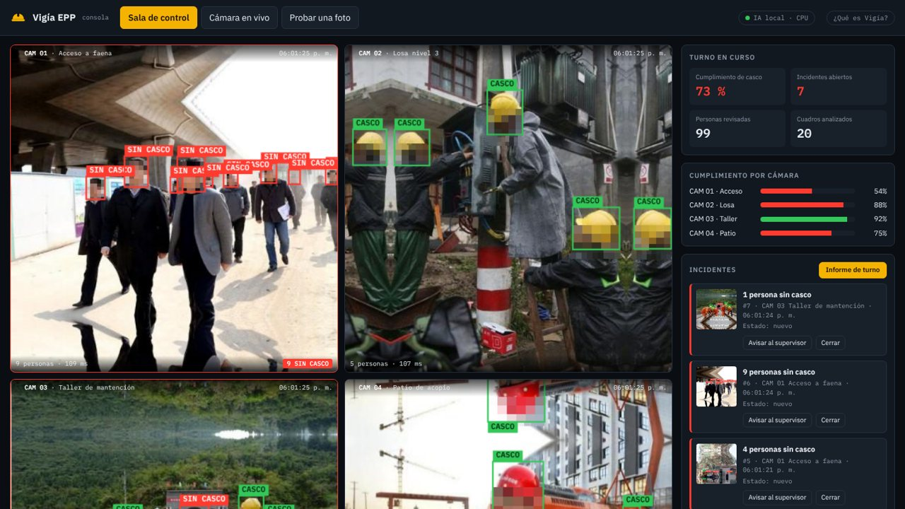
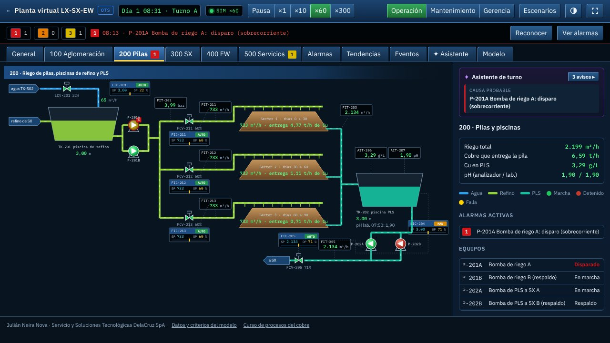
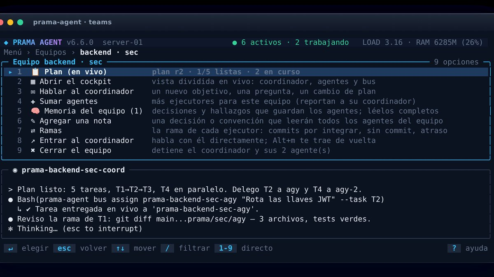
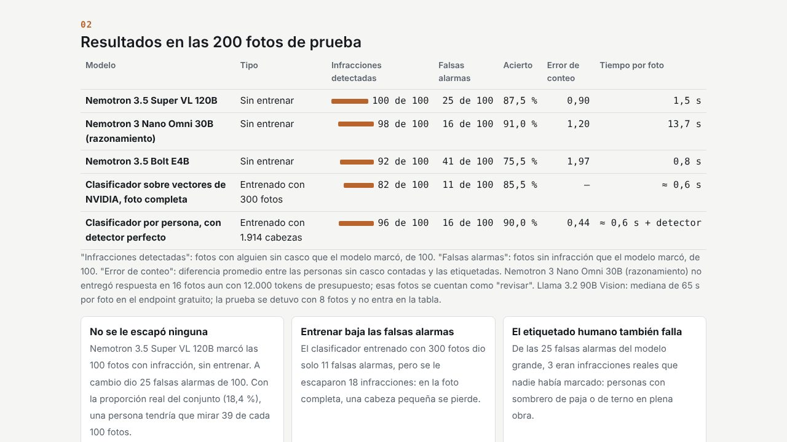
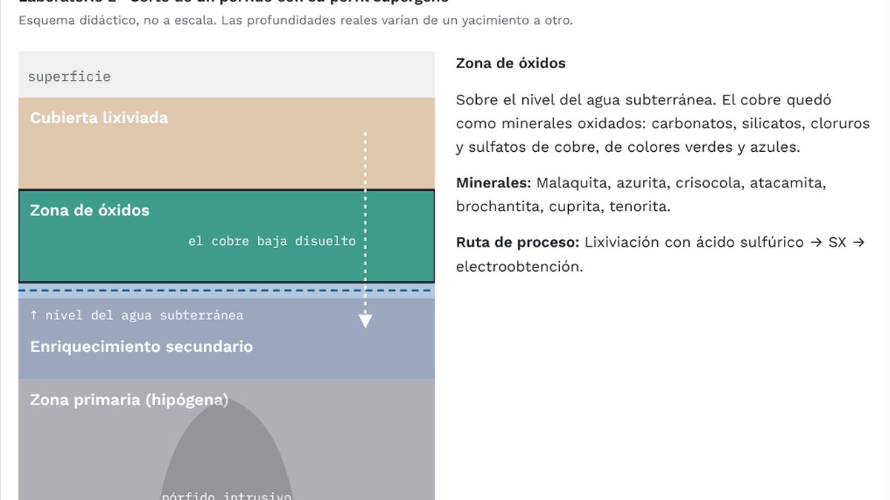
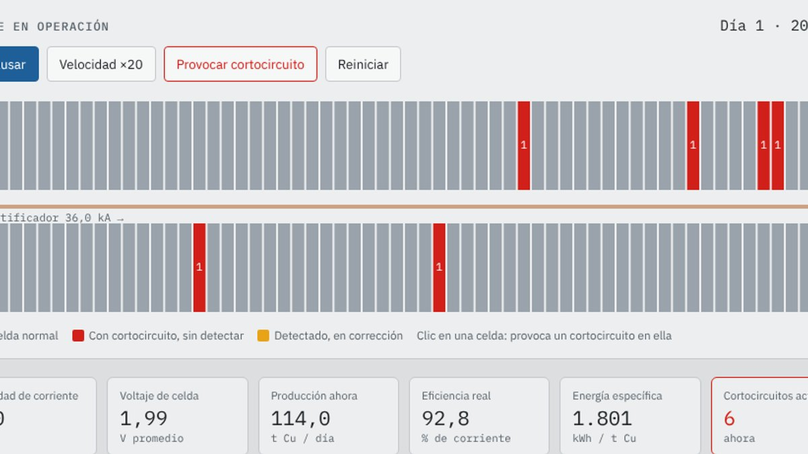
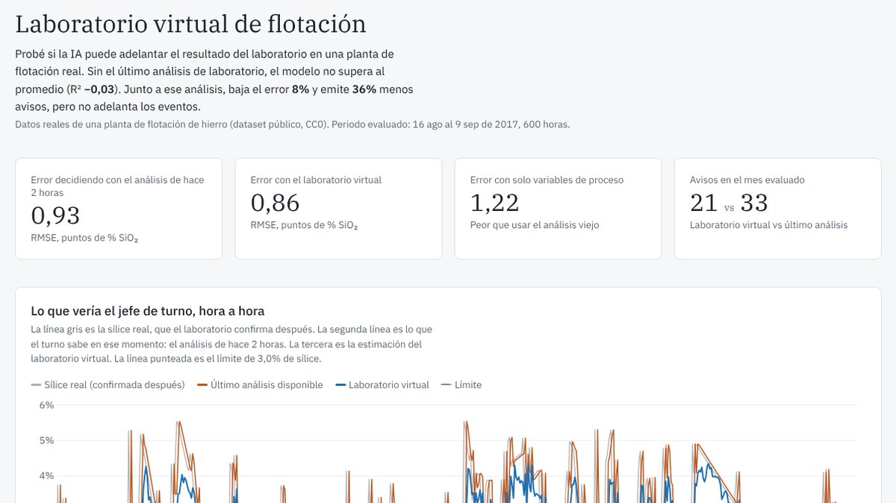

Pruébalas
Herramientas que hacen un trabajo concreto en la operación. Ábrelas y úsalas: corren en el navegador.

Vigía EPP · detección de casco en tiempo real
Una máquina que mira las cámaras de la faena, avisa al supervisor y escribe el informe de turno. La IA corre en el equipo, sin nube. Pruébala con la cámara de tu celular.
Probar Vigía →
Planta virtual LX-SX-EW · sala de control
Una planta de cobre completa en operación: P&ID en vivo, lazos PID, alarmas ISA-18.2, mantenimiento predictivo y KPI de turno. Provoca fallas y mira cómo las ven el operador, el mantenedor y el gerente.
Entrar a la sala de control →
prama-agent
Equipos de agentes de IA trabajando en paralelo en un servidor propio, que verifican lo que los agentes dicen haber hecho.
Ver en GitHub →Pruebas y conocimiento
Cómo sé que funcionan: pruebas con datos reales, simuladores y un curso abierto de procesos del cobre.

Inspección de EPP con IA: ¿cuánto acierta?
Modelos de visión de NVIDIA contra 5.000 fotos reales de faena: infracciones detectadas, falsas alarmas, tiempo por foto y horas que ahorra a un equipo de seguridad.
Ver la prueba →
Procesos del cobre para ingenieros eléctricos
Curso abierto del mineral al cátodo: la química del proceso explicada con voltajes, corrientes y nodos, con simuladores y fuentes públicas.
Empezar el curso →
Simulador de nave de electroobtención
Rectificador, celdas en serie y ley de Faraday. Provoca cortocircuitos y mira cuánto cobre se pierde según cómo se detectan.
Abrir simulador →
Laboratorio virtual de flotación
¿Puede un modelo adelantar al laboratorio? Prueba con datos reales de una planta, evaluada sin trampas, con sus resultados buenos y malos.
Ver la prueba →Qué hago
A través de Servicio y Soluciones Tecnológicas DelaCruz SpA.
Asesoría en digitalización
Qué medir, cómo conectarlo y dónde la IA aporta de verdad, y dónde no.
Hardware para innovación
Prototipos electrónicos, instrumentación, sensores inalámbricos y equipos automatizados.
Proyectos eléctricos y digitales
Diseño, armado de gabinetes, integración y puesta en marcha. Instalador SEC clase A.